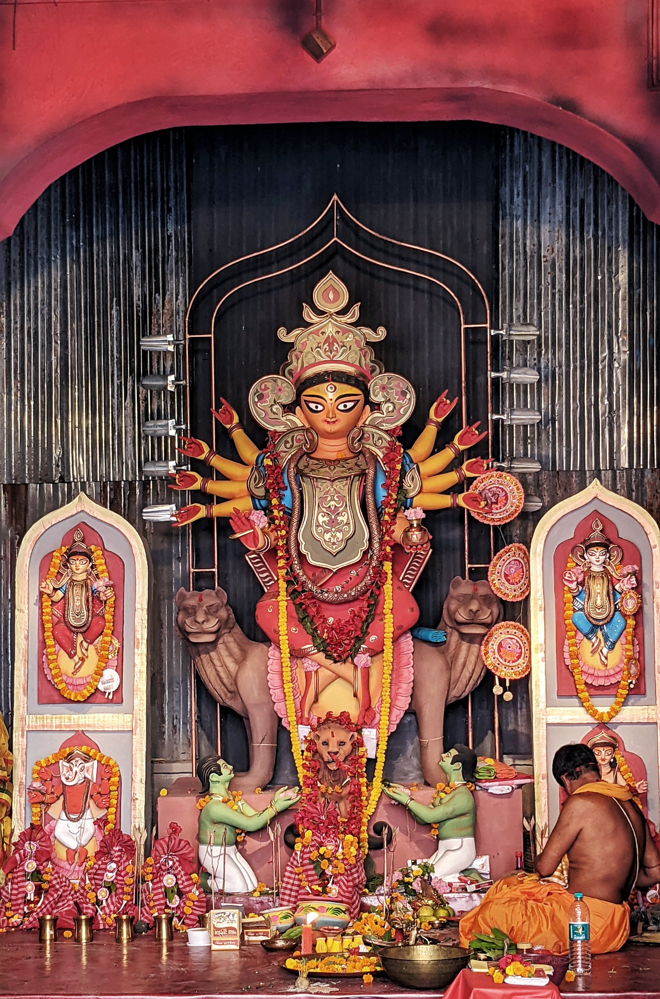

দুর্গাপূজা রচনা
ভুমিকা দুর্গাপূজা শুধু মাত্র হিন্দু সমাজেই প্রচলিত। সমগ্র হিন্দুদের সারা বছর জুড়ে কর্মক্ষেত্র থেকে একঘেয়েমি কাটাতে এই পূজা যেন ওষুধের কাজ করে। দুর্গাপূজার পরে বাঙালী যখন আবার কর্মক্ষেত্রে ফিরে যায়, তখন কর্মক্ষেত্র যেন গুচ্ছ পজিটিভ শক্তিতে ভরে ওঠে। দুর্গাপূজার মধ্যে বাঙালী যেন নিজের প্রান খুঁজে পায়।
 দুর্গাপূজার সময়
আশ্বিন মাসের শুক্লপক্ষের ষষ্ঠী দিনে দেবী পক্ষের আরম্ভ হয়ে থাকে। প্রাচীনকালে চৈত্র মাসের শুক্ল পক্ষে দেবীর আরাধনা করা হত। তবে অনেক জায়গায় এখনও এই সময়ে দুর্গাপূজা হয়ে থাকে। এই পূজা বাসন্তী পূজা নামে পরিচিত। পশ্চিমবঙ্গের বাঙালীরা শরৎকালে দুর্গাপূজা করে থাকে। তাই এই পূজা শারদোৎসব নামেও পরিচিত।
দুর্গাপূজার সময়
আশ্বিন মাসের শুক্লপক্ষের ষষ্ঠী দিনে দেবী পক্ষের আরম্ভ হয়ে থাকে। প্রাচীনকালে চৈত্র মাসের শুক্ল পক্ষে দেবীর আরাধনা করা হত। তবে অনেক জায়গায় এখনও এই সময়ে দুর্গাপূজা হয়ে থাকে। এই পূজা বাসন্তী পূজা নামে পরিচিত। পশ্চিমবঙ্গের বাঙালীরা শরৎকালে দুর্গাপূজা করে থাকে। তাই এই পূজা শারদোৎসব নামেও পরিচিত।
দুর্গাপূজার জন্ম দুর্গাপূজার সূচনা নিয়ে নানান কাহিনী আছে। সেইসব কাহিনীর মধ্যে যেগুলো গুরুত্বপূর্ণ সেইসব কাহিনী গুলো হলঃ
পৌরাণিক উপাখ্যান ব্রম্ভ বৈবর্ত পুরাণ অনুযায়ী দেব দেবীরা যখনই কোন বিপদে পড়েছেন, দেবী দুর্গার পূজা করেছেন। তবে এই পুরাণ মতে শ্রী কৃষ্ণ প্রথম দুর্গাপূজা করেন। তারপরে ব্রম্ভা, শিব ও ইন্দ্র অসুরের হাত থেকে রক্ষা পেতে দুর্গা পূজা করেছিলেন। দেবী ভাগবত পুরাণ অনুযায়ী, ব্রম্ভার পুত্র মনু পৃথিবীতে প্রথম মাটি দিয়ে মূর্তি বানিয়ে দুর্গা পূজা করেন।
কৃত্তিবাসী রামায়ন কৃত্তিবাসী রামায়ন অনুযায়ী রামচন্দ্র দেবী দুর্গার থেকে বর নেওয়ার জন্য দুর্গাপূজা করেন। দেবী দুর্গা প্রসন্ন হয়ে রামচন্দ্র কে আশীর্বাদ দেন। এই আশীর্বাদ এর কারনেই রামচন্দ্র রাবন কে বধ করতে সক্ষম হন। তবে বাল্মীকি রচিত রামায়নে এই সংক্রান্ত কোন কাহিনীর বিবরন নেই। দুর্গাপূজা কে ঘিরে পুরাণে নানান গল্প পুরাণে দুর্গাপূজাকে ঘিরে প্রধান চারটি গল্প আছে। রাজা সুরথের গল্প, মধুকৈটভের গল্প, মহিষাসুরের কাহিনী, শুম্ভ ও নিশুম্ভের কাহিনী। রাজা সুরথ ছিলেন পৃথিবীর রাজা। তাঁর মনের মধ্যে নানান রকমের দুশ্চিন্তার কারন তিনি জানতে চেয়েছিলেন এক ঋষির কাছে। ঋষি বলেন এইসব কিছু দেবী দুর্গার প্রভাবে হচ্ছে। এই কথা জানার পরে রাজা সুরথ দেবী দুর্গার কঠিন তপস্যা করেন। দেবী দুর্গা প্রসন্ন হয়ে রাজাকে তাঁর হারানো রাজ্য ফিরিয়ে দেন। মধুকৈটভের গল্প অনুযায়ী ভগবান বিষ্ণুর কর্ণমল থেকে দুই অসুর এর জন্ম হয়। এই দুই অসুর ব্রম্ভা কে আক্রমন করতে গেলে, ব্রম্ভা বিষ্ণু জাগানোর জন্য কিছু মন্ত্র উচ্চারণ করেন। এই মন্ত্রে প্রসন্ন হয়ে দেবী বিষ্ণু কে জাগিয়ে তোলেন। বিষ্ণু ওই দুই অসুরের সাথে এক বিশাল যুদ্ধ করেন যা থামানোই যায় না। শেষে মহামায়া ওই দুই অসুর কে পরাজয় স্বীকার করতে বাধ্য করেন। ভগবান বিষ্ণু ওদের বধ করেন। এইভাবেই যুদ্ধের ইতি ঘটে। এই চারটি কাহিনীর মধ্যে মহিষাসুরের কাহিনী সবচেয়ে বেশী জনপ্রিয়। মহিষাসুর কঠোর তপস্যা করে ব্রম্ভার থেকে বর চেয়েছিলেন যেন কোন দেবতা তাকে বধ করতে না পারে। ব্রম্ভা তপস্যায় প্রসন্ন হয়ে সেই বর দিতে রাজী হয়েছিলেন। তারপরে এক যুদ্ধে, মহিষাসুর দেবগন কে পরাস্ত করে স্বর্গের ওপর আধিপত্য বিস্তার করেন। দেবতারা তখন ব্রম্ভা, বিষ্ণু ও মহেশ্বরের স্মরনাপন্ন হন। ব্রম্ভা, বিষ্ণু ও মহেশ্বর তিনজনে মিলে তাঁদের থেকে তেজ নির্গত করে সেই তেজের মিলন ঘটালেন ঋষি কাত্যায়নের আশ্রমে। সেই তেজের মিলনে জন্ম হল এক দেবীর। দেবীর জন্ম ঋষি কাত্যায়নের আশ্রমে হওয়ায় দেবী কাত্যায়নী নামেও পরিচিত। সকল দেবতারা দেবী কে অস্ত্র দিয়ে সাজিয়ে তুললেন। এই দেবীই অষ্টদশভূজা মহালক্ষ্মী রূপে মহিষাসুরের বধ করেছিলেন। তাই দেবী মহিষাসুরমর্দিনী নামেও পরিচিত। শুম্ভ ও নিশুম্ভ নামে দুই অসুর স্বর্গের অধিকার কেড়ে নিলে, দেবতারা আদি দেবী মহাদেবীর স্মরনাপন্ন হন। দেবী তাঁর দেহকোষ থেকে আরেক দেবীর জন্ম দেন। এই দেবী আর পার্বতী বিন্ধ্য পর্বতে যান। তাঁদের যুগল রুপ দেবী বিন্ধ্যবাসিনী নামে পরিচিত। এই দেবী কৌশিকী নামেও আখ্যাত হলেন। দেবী প্রতিজ্ঞা করেছিলেন যে যুদ্ধে যিনি তাঁকে পরাস্ত করতে পারবেন, তাঁকেই বিবাহ করবেন। একে একে শুম্ভ ও নিশুম্ভ এর সকল সৈন্য দেবীর কাছে পরাজিত হলেন। শুম্ভ ও নিশুম্ভ তখন দেবীর সাথে যুদ্ধ করার জন্য রক্ত বীজ দৈত্য কে পাঠালেন। এই দৈত্যের রক্ত মাটিতে পড়া মাত্র আরও অনেক দৈত্যের জন্ম হওয়াতে দেবী ক্রোধান্বিত হয়ে যান। দেবীর এর ক্রোধের জন্য দেবীর মুখ খানা কাল হয়ে যায়। দেবীর এই রুপ কালী নামে পরিচিত। দেবী কালী ওই দৈত্য কে এমনভাবে বধ করেন যেন এক ফোঁটা রক্ত ও মাটিতে না পড়ে। দেবী নিজেই সেই রক্ত পান করেন। আর দৈত্য কে বধ করেন। তারপরে শুম্ভ ও নিশুম্ভ কেও বধ করেন।
প্রতিমার বর্ণনা দেবী দুর্গার দশটি হাত। তাই দেবীকে দশভুজা বলা হয়। দেবীর পূজা তে দেবীর পুরো পরিবার থাকে সাথে। দেবীর ডান দিকে লক্ষ্মী ও গনেশ। আর বাম দিকে সরস্বতী আর কার্ত্তিক থাকেন। দেবী লক্ষ্মী হলেন ধনের দেবী, গনেশ হলেন ভাগ্যের দেবতা। দেবী সরস্বতী হলেন বিদ্যার দেবী, আর কার্ত্তিক হলেন যুদ্ধের দেবতা। দেবী দুর্গা কে পদ্ম দিয়েছিলেন ব্রম্ভা। বিষ্ণু দিয়েছিলেন শক্তিশালী চক্র। দেবাদিদেব মহাদেব দিয়েছিলেন ত্রিশূল। দেবরাজ ইন্দ্র দিয়েছিলেন বজ্র। যমরাজ দিয়েছিলেন গদা। বরুণ দেব দিয়েছিলেন শঙ্খ। পবনদেব দিয়েছিলেন তির-ধনুক। শেষনাগ দিয়েছিলেন নাগপাশ নামক সাপ। দেবীর হাতে যে ঘন্টা থাকে তা দিয়েছিলেন দেবরাজ ইন্দ্রের ঐরাবত। এছাড়াও দেবীর হাতে থাকে তলোয়ার। এই সমস্ত অস্ত্রশস্ত্র দিয়ে দেবী হয়ে ওঠেন অনন্যা।
পুজোর আগের দিনগুলি বছরের এই কয়েকটি দিনে বাঙালী ভালই মেতে থাকে। প্রায় এক মাসের ও আগে থেকে সময় গুনতে শুরু করে বাঙালীরা। প্রায় প্রত্যেকেই প্ল্যানিং বানাতে থাকে এই পূজার চারটে দিন কোথায় কাটাবে। এক মাস আগে থেকে কেনা কাটা শুরু হয়ে যায়। এমন তাড়জোর মনে হয় না অন্য কোন উৎসবে হয় বলে। যেসব ছেলে মেয়েরা চাকুরী সুত্রে দেশের বাইরে থাকে, তারা প্রত্যেকেই এই পূজার কয়েকটি দিন বাড়ী যাওয়ার আপ্রান চেষ্টা করে। তাদের বাবা মা রাও অধীর আগ্রহে অপেক্ষা করে পূজার এই দিনগুলোর জন্য। কোন কারনে ছেলে মেয়েরা আসতে না পারলে, বাবা মা এর মুখে বিষণ্ণতার ভাব ফুটে উঠে। দুর্গাপূজা মানেই তো পরিবারের সকলকে নিয়ে জমিয়ে আড্ডা। দুর্গাপূজা মানেই তো খুব ভালো ভালো খাবার খাওয়া, প্যান্ডেলে প্যান্ডেলে ঘোরা, বন্ধুদের সাথে দেখা করা, নতুন জামা কাপড় পরে সাজুগুজু করে গুচ্ছ ফটো তোলা। তবে প্রাচীনকালে দুর্গাপূজা মানে এমনটা ছিল না। আনন্দ অবশ্যই ছিল। তখনকার দিনে ছেলে মেয়েরা বাইরে চাকুরী করতো না। তখনকার দিনে পূজা মানে একটা নতুন জামা হলেই হবে, পূজা মানে সন্ধ্যা আরতিতে ঠাকুরের সামনে একটু শান্তিতে বসে থাকা, পূজা মানে ঠাকুরকে আনন্দের সাথে বরন করা, পূজার দিনগুলিতে ভোগ দিয়ে পূজা করা, উপোস করে পুষ্পাঞ্জলি দেওয়া।
 পূজার দিনগুলিতে মানুষের মনে প্রফুল্লতার ছবি ফুটে ওঠে। চারিদিকে এক হৈচৈ পড়ে যায়। সপ্তমীর দিনে সকাল সকাল দেবী কে বরন করা হয়। অনেকে এই দিনে নিজ নিজ বাড়ীতে চৌকাঠের কাছের দেওয়ালে দেবী দুর্গার নাম লিখে, কিম্বা দুর্গা কে ঘিরে কোন মন্ত্র লিখে। প্রত্যেকদিন দুর্গা মাকে পূজা করা হয়। অনেকেই এখানে ভোগ নিবেদন করে থাকেন। আর ওই কয়েকদিন প্রতি সন্ধ্যায়, আরতি হয় পূজা মণ্ডপে। অষ্টমী আর নবমীর সন্ধিক্ষণে সন্ধি পূজা হয়। এই সন্ধি পূজাতে চালকুমড়ো বলি দেওয়া হয়। কিছু মানুষ পূজা নিয়ে ব্যস্ত থাকে, কিছু মানুষ সাজগোজে থাকে ব্যস্ত। কিছু মানুষ নানান রকমের প্রতিযোগিতার আয়োজন করে মাতিয়ে রাখে শিশুদের। ষষ্ঠী থেকে নবমী –এই চার রাত্রিই সন্ধ্যা আরতির পরে মেতে থাকে গানে, নাচে, আবৃতিতে। শিশু থেকে শুরু করে আবালবৃদ্ধবনিতা সকলেরই চোখ থাকে স্টেজ এর দিকে। নবমীর পর থেকে মানুষের মনে বিষণ্ণতার ভাব ফুটে ওঠে। বাড়ীতে মা এসে চলে গেলে যেমন বাড়ী খালি খালি লাগে, বিজয়া দশমীর দিনে বাঙালীর মনেও সেই একই ভাব যেন ফুটে ওঠে। বিদায় দিতে মন তো চায় না। তবুও নিয়ম অনুসারে দেবীকে বিসর্জন তো দিতেই হয়। বাঙালী তখন “আসছে বছর আবার হবে” এই স্লোগানে মেতে ওঠে। বাড়ীতে যারা বয়স্ক, যারা এই কয়েকদিন প্রবাসী ছেলে-মেয়ের সাথে সময় কাটাতে পেরে আনন্দে আত্মহারা থাকে, তাদের মন এক তীব্র বিষণ্ণতার স্বীকার হয়। কারন দশমীর পরের দিন ই বেশীরভাগ বিলেত ফেরত ছেলে মেয়েরা আবার নিজ নিজ কর্মের জায়গায় ফিরে যায়।
দেশে পুজো
দেশের সব রাজ্যেই দুর্গাপূজা হয়ে থাকে নানান ভাবে, নানান ভঙ্গীতে। গ্রাম গুলোতে এই পুজার মধ্যে বেশী মাহাত্ম্য দেখা যায়। গ্রামগুলোতে পুজাই প্রধান হয়ে ওঠে। কিন্তু শহর গুলোতে পূজা আজ ব্যবসায় পরিণত হয়েছে। পূজার মধ্যে এক ভক্তি থাকা দরকার তা যেন শহর গুলোতে লোপ পেয়েছে। এ যেন আনন্দ করার জন্য খরচ করে কোন অনুষ্ঠান যেখানে কারো আমন্ত্রনের দরকার পড়ে না। শহর গুলোতে খুব কম মানুষেই মন্দির প্রাঙ্গনে বসে পূজা দেখতে আগ্রহী হয়ে থাকেন। বেশীরভাগ মানুষের চোখ থাকে প্যান্ডেল কেমন, লাইটিং কেমন, এইসবের দিকে। প্রতিযোগিতা চলে শহর তলিতে। একডালিয়ার পূজা নাকি শ্রী ভূমির পূজা – কোন দুর্গাপূজা এবার প্রথম হবে? কে কত টাকা খরচ করেছে। সেইদিকেই নজর সব ধনী- ব্যবসায়ীদের।
বিদেশে পুজো
বাঙালী যেখানে দুর্গাপূজাও সেখানে। আজ যেমন বাঙালী বিশ্বের সর্বত্র ছড়িয়ে ছিটিয়ে বিরজমান, ঠিক তেমনভাবেই দুর্গাপূজাও বিশ্বব্যাপী আয়োজিত হয়ে থাকে। ভারতের প্রতিবেশী দেশ বাংলাদেশ ও নেপাল এ দুর্গাপূজা বেশ জাঁকজমক ভাবেই পালিত হয়ে আসছে বহু বছর ধরে।
উপসংহার
সারা বছরের জমানো ক্লান্তি ম্যাজিকের মতো ঘুচে যায় দুর্গাপূজার জন্য। অন্য কোন পূজা এইভাবে ক্লান্তি ঘোচাতে পারে বলে মনে হয় না। তাই তো বাঙালীরা যে যেখানেই থাকুক না কেন অধীর আগ্রহে অপেক্ষা করে এই কয়েকটি দিনের জন্য। প্রচুর গরমে যখন সবাই উত্তপ্ত, সেই মুহূর্তে এক পশলা বৃষ্টি যেমন সবার মনে শীতলতা এনে দেয়; ঠিক সেইরকমই অফিসের কাজে কিম্বা ব্যবসার উত্থান পতনে কিম্বা বাবা- মা এর কড়া শাসনে কিম্বা পড়াশুনোর চাপে বিধ্বস্ত বাঙালী সব রকমের চাপ থেকে মুক্ত হয়ে শক্তি লাভ করে দুর্গাপূজাতে। আশা করি “দুর্গাপূজা রচনা” টি তোমাদের ভালো লেগেছে। কিছু তথ্য যদি তোমরা গল্পের আকারে মনে রেখে দিতে পারো, তাহলে রচনাটি লিখতে তোমাদের অনেক সহজ হয়ে যাবে। আর কিছু ঘটনা যা দুর্গাপূজার সময় মানুষের মনের মধ্যে ঘটে থাকে। যদি এইরকম অন্য আরও রচনা তোমাদের দরকার পড়ে, কমেন্টে লিখে জানাতে ভুলো না যেন। ভালো থেকো, সুস্থ থেকো। সব্বাইকে ভালো রাখো।